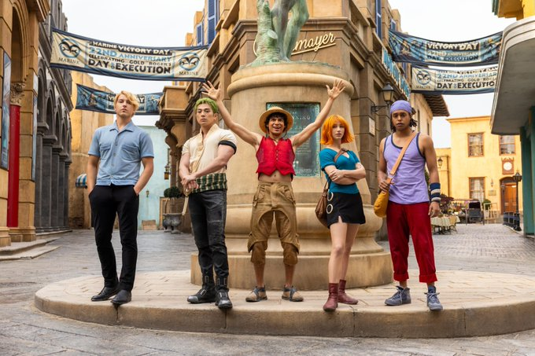

Retour sur la saison 1
La première saison de One Piece sur Netflix a été un pari audacieux, adaptant le célèbre manga d'Eiichiro Oda en live-action. Sortie en septembre 2023, elle a introduit les aventures de Monkey D. Luffy et de son équipage, avec un budget estimé à 144 millions de dollars. Même si le projet semblait risqué, la série a rencontré un succès suffisant pour qu'une deuxième saison soit confirmée deux semaines après son lancement.
Les remakes de séries : une tendance qui s'étend
La liste des séries ayant eu leur remake est longue comme un bras extensible, mais ce qui distingue One Piece sur Netflix, c’est qu'il s'agit d’un remake d'une série toujours en cours de diffusion. Avec plus de 100 tomes et 1100 épisodes, One Piece a été un défi considérable à adapter en live-action, d'autant plus que l'anime et le manga continuent de se développer.
Première image de la saison 2
Le 5 février 2025, Netflix a partagé sur X (anciennement Twitter) une première image de la saison 2, offrant un aperçu de Loguetown, la ville où Gol D. Roger a été exécuté par la Marine il y a 22 ans. Cette ville, brièvement montrée dans le premier épisode de la saison 1, est un lieu emblématique où Luffy devrait rencontrer un ennemi mystérieux teasé à la fin de la première saison.
Luffy et son équipage
L'idée audacieuse de la série live-action
Non seulement l’idée de reprendre à zéro une histoire culte étalée sur plus de 100 tomes et 1100 épisodes était osée, mais celle de transposer un univers aussi bariolé et cartoonesque que celui d'Eiichiro Oda en prises de vues réelles était particulièrement insensée. Pourtant, la série live-action de One Piece a été lancée avec succès en septembre 2023, marquant un tournant pour les adaptations de mangas et animes à la télévision.
Le casting de retour
Les acteurs principaux reprendront leurs rôles respectifs :
- Iñaki Godoy dans le rôle de Monkey D. Luffy
- Mackenyu dans le rôle de Roronoa Zoro
- Emily Rudd dans le rôle de Nami
- Jacob Romero Gibson dans le rôle d'Usopp
- Taz Skylar dans le rôle de Sanji
Les nouveaux personnages attendus
La saison 2 introduira de nombreux personnages emblématiques :
- Nico Robin – Archéologue et membre des Chapeaux de Paille, interprétée par Lera Abova.
- Smoker – Officier de la Marine déterminé à capturer Luffy, joué par Callum Kerr.
- Tashigi – Épéiste talentueuse et subordonnée de Smoker, incarnée par Julia Rehwald.
- Vivi/Miss Wednesday – Princesse du royaume d'Alabasta infiltrée dans Baroque Works, jouée par Charithra Chandran.
- Nefertari Cobra – Roi d'Alabasta et père de Vivi, interprété par Sendhil Ramamurthy.
- Dr. Kureha – Médecin expérimentée de l'île de Drum, incarnée par Katey Sagal.
- Dr. Hiriluk – Médecin excentrique de l'île de Drum, joué par Mark Harelik.
- Crocodile – Leader de Baroque Works et antagoniste majeur, interprété par Joe Manganiello.
- Monkey D. Dragon – Père énigmatique de Luffy et leader révolutionnaire, joué par Rigo Sánchez.
- Igaram – Garde du corps de Vivi, incarné par Yonda Thomas.
- Ipponmatsu – Vendeur d'épées à Loguetown, interprété par James Hiroyuki Liao.
- Miss Goldenweek – Agent de Baroque Works, jouée par Sophia Anne Caruso.
- Chess – Garde du corps de Wapol, incarné par Mark Penwill.
- Kuromarimo – Autre garde du corps de Wapol, interprété par Anton David Jeftha.
Date de sortie et bande-annonce
Le tournage de la saison 2 est terminé, mais sa sortie n'est pas prévue pour 2025. Aucune date précise n'a été annoncée, mais une bande-annonce devrait être dévoilée dans les prochains mois, promettant une nouvelle saison avec des personnages encore plus emblématiques du manga.
Conclusion
En somme, la saison 2 de One Piece promet d'être encore plus spectaculaire que la première, avec des personnages fascinants, de nouveaux enjeux et un univers encore plus vaste à explorer. Les fans sont impatients de découvrir les prochaines aventures de Luffy et de son équipage. Restez à l'affût pour plus d'informations et la bande-annonce officielle qui ne saurait tarder !